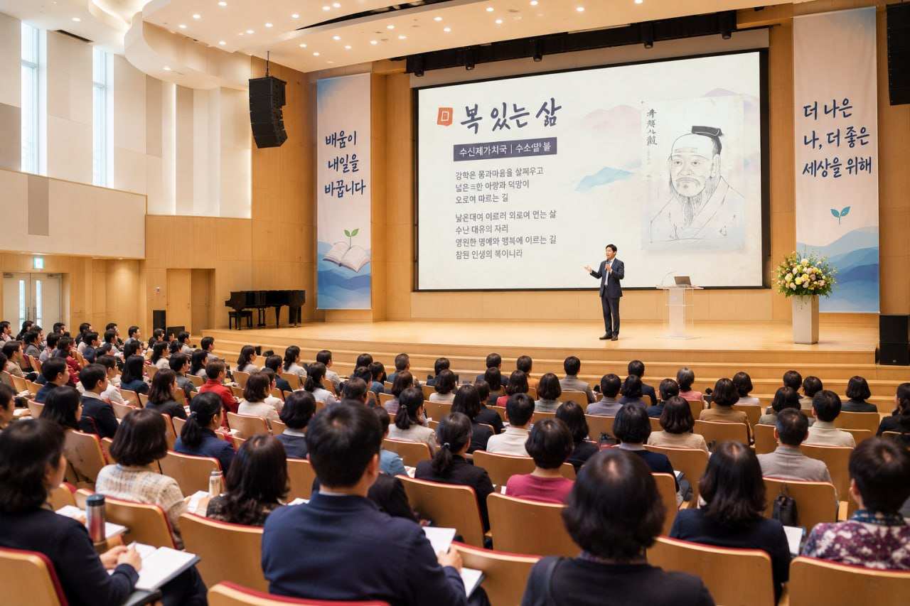
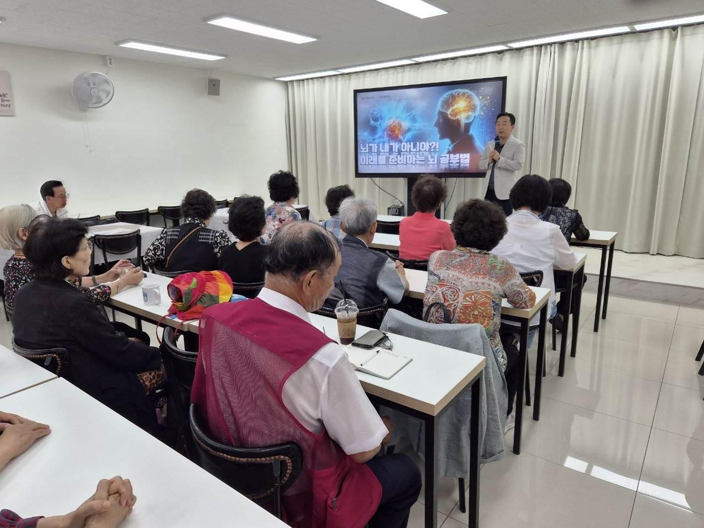
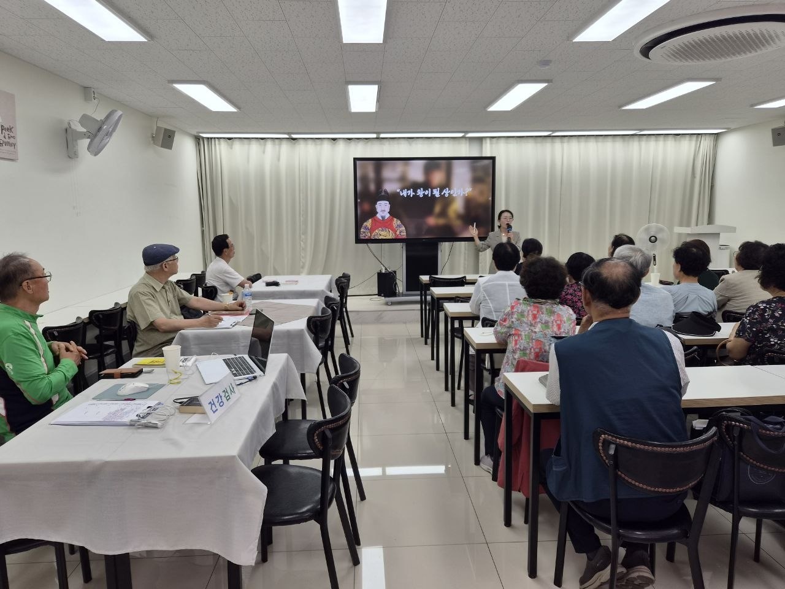
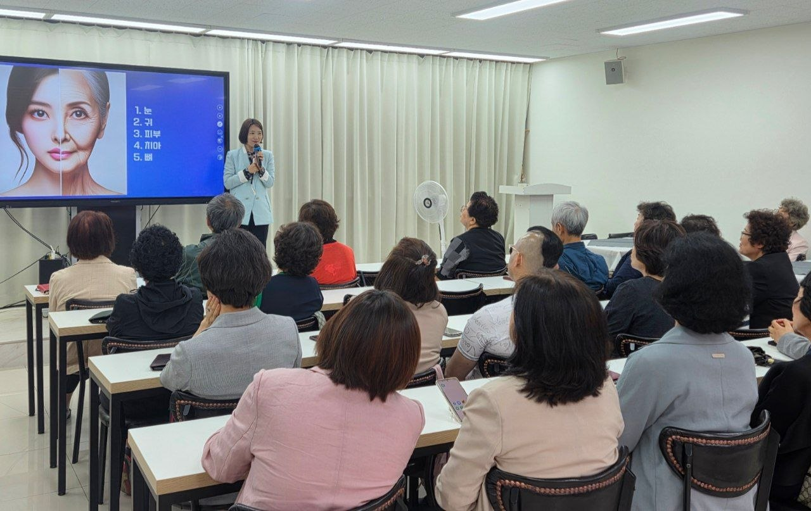
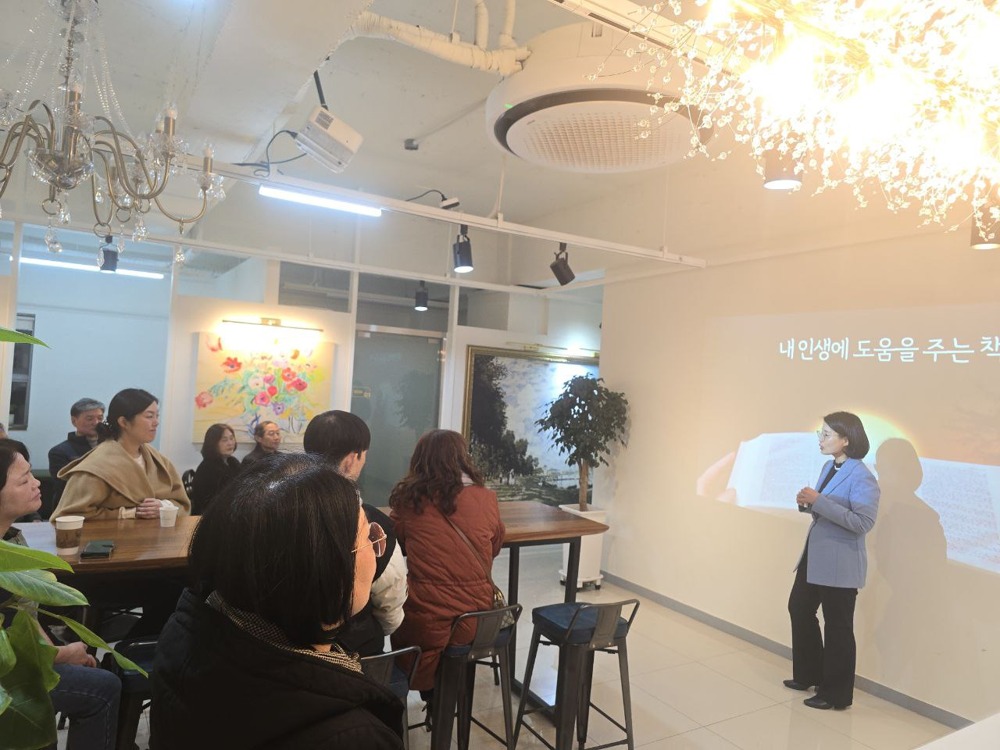
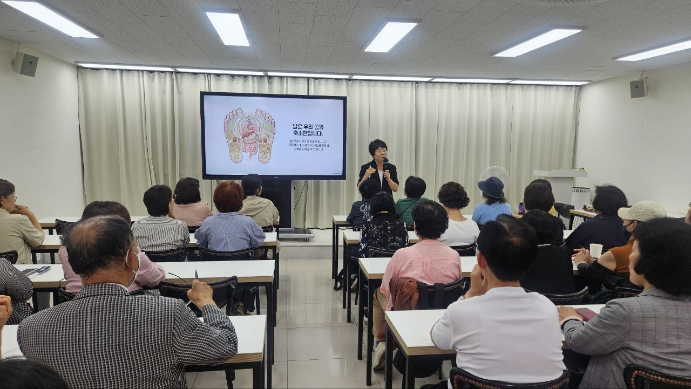
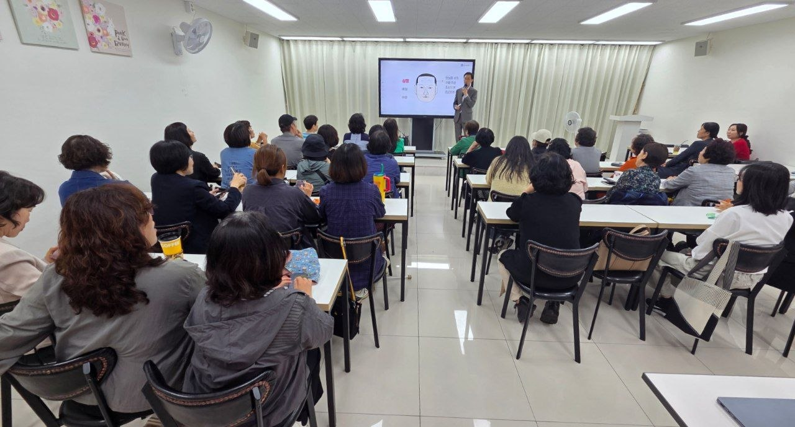
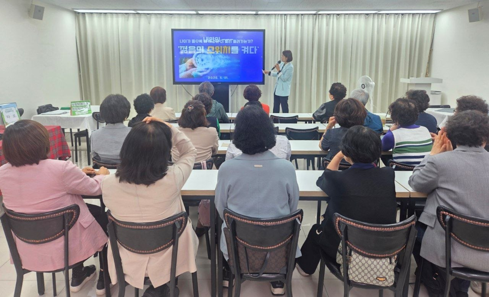

이음교육연구센터 연구소장 · 두뇌코칭 강사
양시현
- 前) 한국 예술인 재단 인성교육강사
- 前) 한국 자격 검정 인문학 교육팀장
- 사회인문학 자격검정위원
- 더카네기 재단 교육강사
- 성경 인문학 교육강사
- 종교학 강사과정 수석코치
- 크리스찬 코칭 및 다수대학출강
- 이음교육연구센터 연구소장
- 두뇌코칭 강사

ABOUT
안양 시민이 가까운 곳에서 인문학, 심리, 건강, 원데이 체험을 경험할 수 있도록 다양한 프로그램을 엮습니다. 혼자 와도 편안하고, 함께 오면 더 즐거운 분위기를 지향합니다.
PEOPLE
이음교육연구센터 연구소장 · 두뇌코칭 강사
비전코칭 · 자기성장 프로그램
북테라피 전문강사 · 이음교육연구센터 연구진
심리상담 · 힐링테라피
문화예술기획 · 심리정서 코칭
PROGRAMS

뇌가 배우고 기억하는 방식을 이해하고, 일상에서 바로 적용할 수 있는 학습 습관을 정리하는 세미나입니다.

고전과 삶의 질문을 함께 읽으며 행복을 부르는 생각의 방향과 관계의 태도를 나누는 인문학 시간입니다.

얼굴과 표정, 인상에 담긴 습관을 통해 나와 타인을 이해하고 소통의 실마리를 찾는 세미나입니다.

성경 속 이야기와 인문학적 질문을 통해 나를 돌아보고 삶의 방향을 차분히 정리하는 클래스입니다.

발과 몸의 신호를 살피며 일상에서 실천할 수 있는 순환과 회복의 건강 습관을 배웁니다.

참여자와 가까이 소통하며 배움의 내용을 일상으로 이어가는 소규모 강의형 프로그램입니다.
SKETCH
